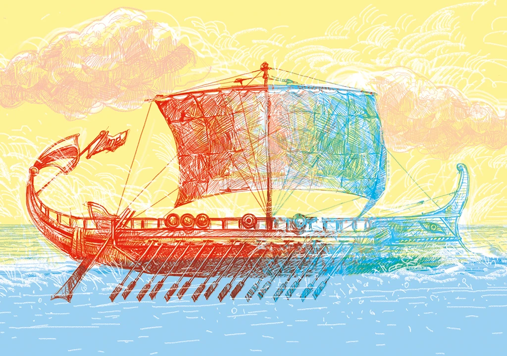

Se o navio de Teseu trocar de peças ao longo de uma viagem, ainda será o mesmo?
Fruto de uma relação dupla de Edra com Egeu (rei de Atenas) e Poseidon (deus dos mares), Teseu foi importante na mitologia grega. Sua façanha mais conhecida foi derrotar o Minotauro no labirinto de Creta, que se alimentava anualmente de sete rapazes e sete moças atenienses, como parte de um tributo imposto pelo rei de Creta.
Vidas Paralelas, do pensador grego Plutarco, propõe o seguinte: Teseu parte de navio do ponto A para o ponto B. Mas, ao longo de uma viagem de 50 anos, vai substituindo cada peça do barco conforme se desgasta, até que todas tenham sido trocadas. Eis o paradoxo dá para dizer que o navio que chegou em B é o mesmo que saiu de A? Ou já é o outro?
Existem várias abordagens e alternativas para responder a esse paradoxo, cada uma oferecendo uma perspectiva filosófica diferente. Abaixo estão algumas alternativas comuns: